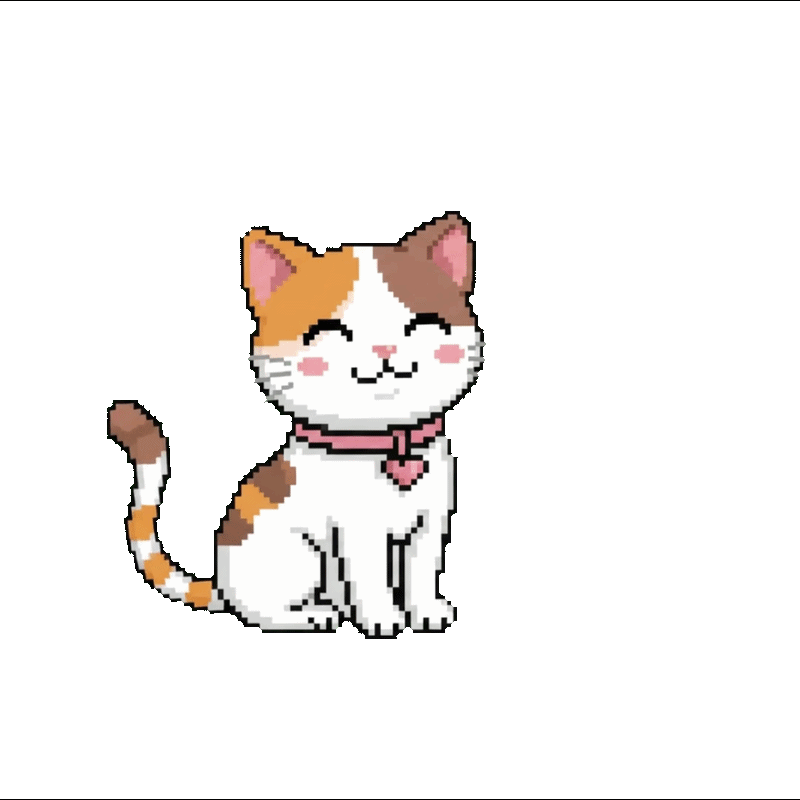
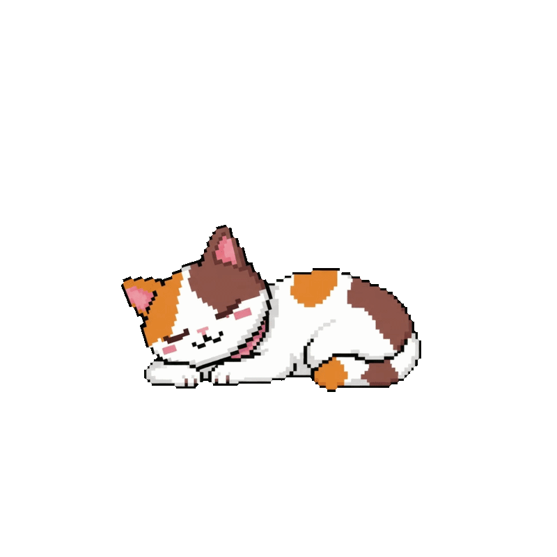
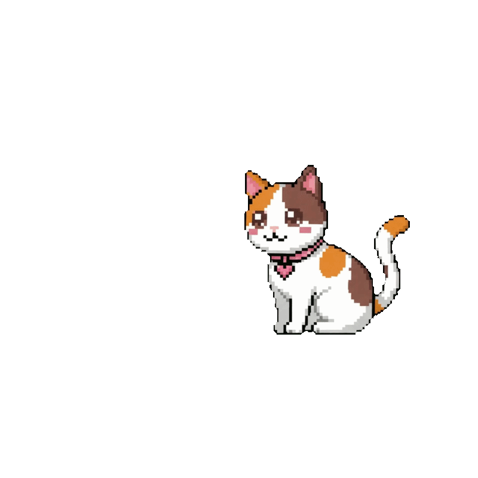
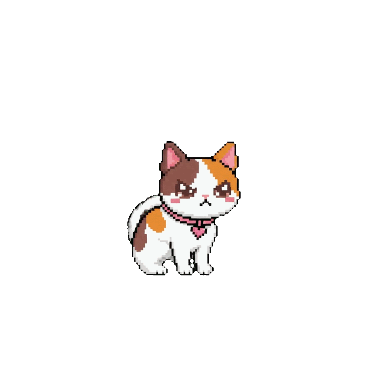
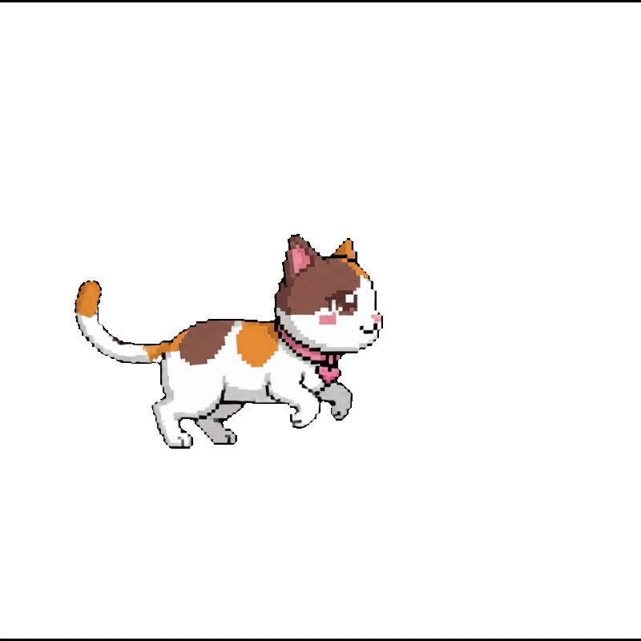
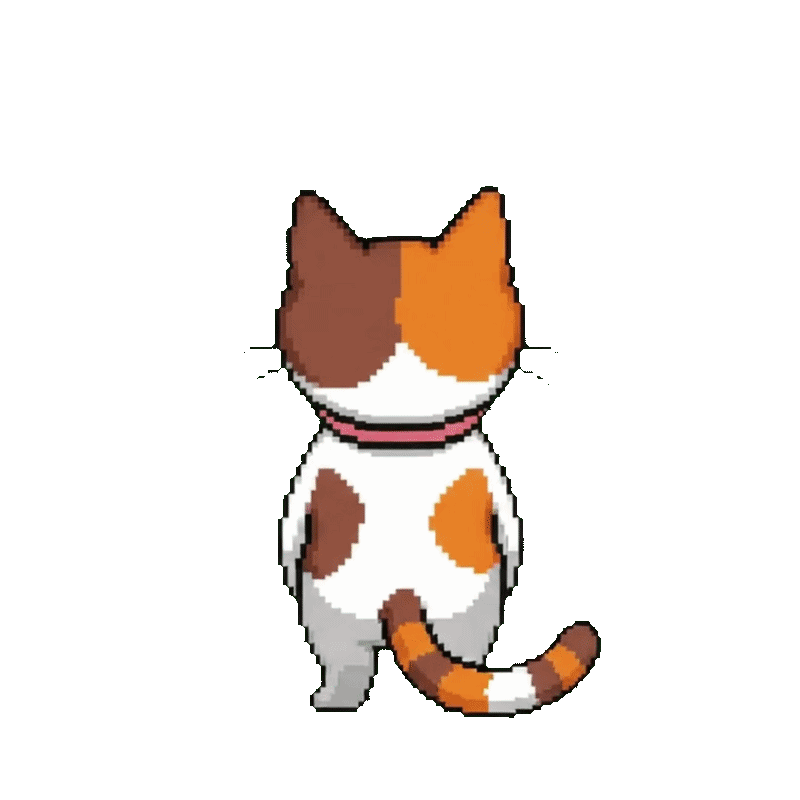
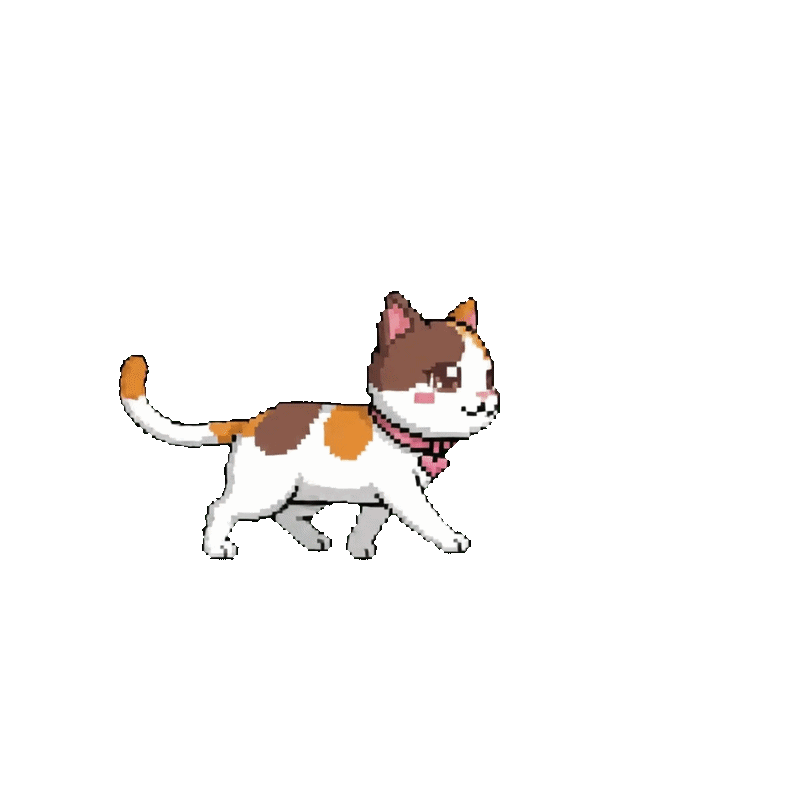
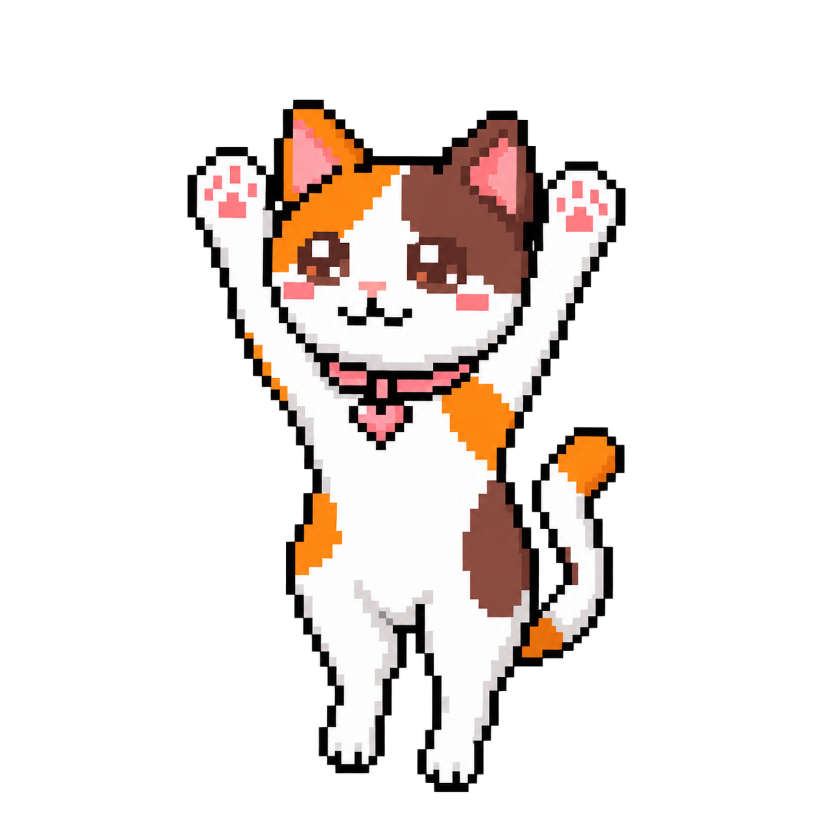
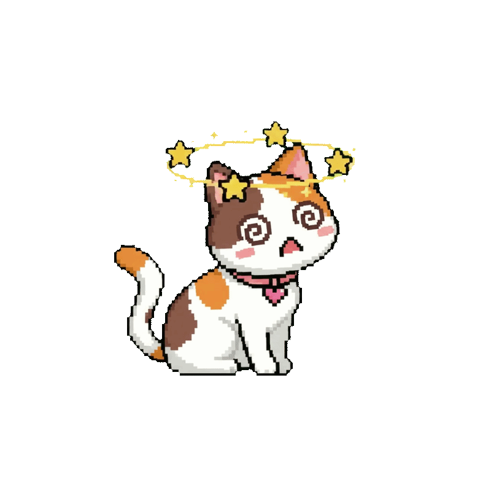

Mata-mata real-time
Ekstensi Mata-Mata Siti mendeteksi aktivitas video pada halaman short-video yang didukung.
BROWSER LINKKenalan dengan Siti, kucing pixel di desktop yang siap menyelamatkan waktumu dari lubang kelinci YouTube Shorts, TikTok, dan Instagram Reels. Lucu saat santai, tegas saat kamu kebablasan.
// Satu kucing kecil. Sedikit drama. Waktu fokus yang lebih waras.

Siti tinggal di desktop-mu, menemani saat bekerja, lalu turun tangan ketika sesi scroll mulai mengambil alih harimu.

Siti adalah pet desktop interaktif yang terhubung ke ekstensi browser. Ekstensi memantau perpindahan video di halaman short-video yang didukung, sementara Siti tinggal melayang di atas jendela lain.
Setelah hitungan mencapai 10 video, Siti akan marah, berlari ke tombol tutup tab, lalu mencakar sebelum tab ditutup. Di luar tugasnya, dia bisa kamu seret, ajak bergoyang sampai pusing, atau biarkan tidur di pojok layar.
Di balik pikselnya, Siti punya alur kerja yang dirancang untuk menginterupsi doomscrolling tanpa menghilangkan sisi pet desktop yang menyenangkan.
Ekstensi Mata-Mata Siti mendeteksi aktivitas video pada halaman short-video yang didukung.
BROWSER LINKSetiap perpindahan ke video berikutnya dihitung. Ketika doomscrolling terjadi maka Siti akan bertindak.
SCROLL COUNTERSiti marah, berlari menuju tombol tutup tab, mencakar, lalu menutup tab setelah jeda sekitar 2–3 detik.
2–3 SEC DRAMASeret ke posisi lain, goyangkan sampai pusing, atau temani dia tidur saat desktop sedang tenang.
DESKTOP COMPANIONSetiap animasi punya tugasnya sendiri—mulai dari menyapa, mengantuk, sampai menjalankan misi penyelamatan waktu.
Mode respons setelah Siti melakukan aksi—misalnya selesai mencakar atau setelah dipindahkan. Mode ini juga aktif ketika kamu membuka halaman pemicu doomscrolling, termasuk saat sebelumnya dia sedang tidur.

Animasi transisi saat Siti mulai mengantuk. Jika sekitar 2 menit tidak disentuh atau dipindahkan, dia masuk ke mode ini sebelum benar-benar tidur.
Mode santai yang terus berjalan sampai ada interaksi dari pengguna. Namun, Siti akan bereaksi jika kamu memindahkan atau menggoyangkannya.

Aktif saat perilaku doomscrolling mencapai pemicu. Siti menunjukkan protesnya sebelum memulai aksi mengejar tombol tutup tab.

Animasi perpindahan saat Siti bergerak dari posisinya menuju tombol X pada tab browser yang akan ditutup.

Setelah mencapai tombol X, Siti mencakar. Tab tidak langsung tertutup—ada jeda sekitar 2–3 detik, lalu mode berakhir ketika tab tertutup.

Dipakai setelah aksi mencakar selesai, saat Siti berjalan untuk kembali ke tempatnya semula di desktop.

assets.Aktif ketika kamu memindahkan Siti dari satu tempat ke tempat lain. Dia pasrah dibawa ke lokasi baru di layar.

Aktif ketika Siti digerakkan bolak-balik dengan cepat. Setelah dilepas, dia perlu pulih sebelum melanjutkan perilaku sebelumnya.
Mode spesial menjaga agar respons Siti tetap terasa nyambung dengan apa yang sedang dia lakukan sebelumnya.
Jika Siti sedang tidur lalu dipindahkan, dia bereaksi dengan urutan Marah → Mau Tidur → Tidur.
Jika Siti sedang tidur atau meow lalu digoyangkan cepat, dia masuk mode Pusing setelah dilepas.
Setelah pusing, jika sebelumnya tidur, Siti akan marah lalu kembali melalui mau tidur ke tidur. Jika sebelumnya meow, dia kembali ke mode meow.
Desktop pet dan ekstensi browser bekerja berpasangan. Pastikan keduanya sudah dijalankan agar Siti bisa mendeteksi pemicu di browser.
Buka aplikasi desktop di Windows. Siti akan melayang di atas jendela aplikasi lain.
Pasang ekstensi Mata-Mata Siti pada browser berbasis Chromium.
Buka Shorts, TikTok, atau Reels yang didukung. Ekstensi menghitung perpindahan video.
Ketika hitungan mencapai video ke-10, Siti masuk mode marah dan menjalankan urutan aksinya.
Hal yang perlu kamu siapkan sebelum membawa Siti pulang.
Windows 10 atau Windows 11.
Google Chrome, Microsoft Edge, Brave, atau browser berbasis Chromium lainnya.
Aplikasi desktop dan ekstensi browser perlu dipasang sesuai petunjuk rilis.
Didesain menjadi teman desktop tanpa iklan yang mengganggu.
Catatan: ukuran file dan format paket instalasi akan mengikuti build yang kamu unggah ke GitHub Releases.
Unduh Siti untuk Windows dan pasang ekstensi Mata-Mata Siti. Klik tombol di bawah untuk mengunduh aplikasinya secara langsung beserta panduannya.